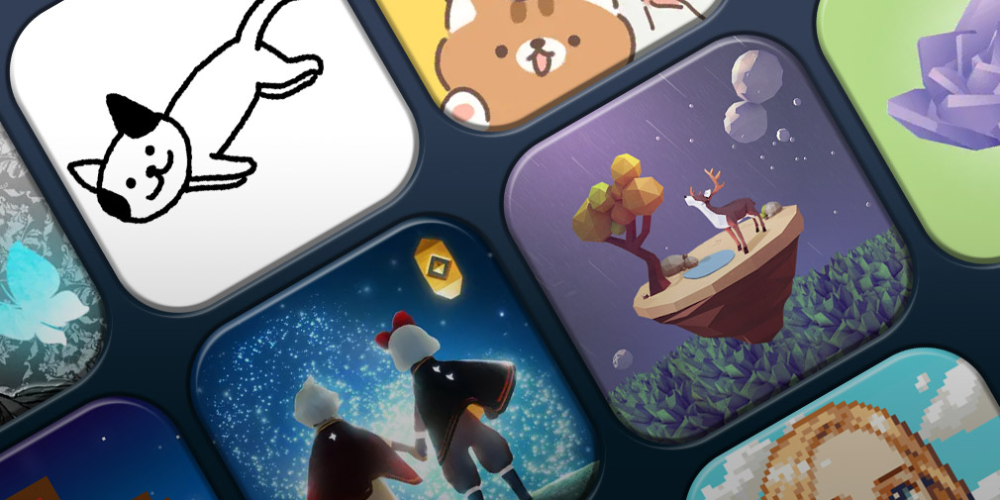

Blues Cues
Blues Cues offers a variety of resources when it comes to battling depression. While at our center we hope to help those in need to rehabilitate, we also comprehend, sometimes there are external aids that can help at any given moments. Because we care for those in dire situations, below we'll link a variety of resources that can be contacted at any moment for moral support.
Hotlines and Crisis Services:
National Suicide Prevention Lifeline (USA): 1-800-273-TALK (1-800-273-8255) Crisis Text Line: Text "HELLO" to 741741 Samaritans: 116 123 (UK) International Association for Suicide Prevention: Provides a directory of crisis centers worldwide.
Therapist Directories:
- Psychology Today
- TherapyDen
- GoodTherapy
Self-assessment Tools
Local and Online Support Groups
DBSA Support Groups: Information is available at the Depression and Bipolar Support Alliance DBSA.
Interview with Mental Health Activist Therese Borchard
Did you know?
Music can elevate mood, reduce symptoms of depression, and increase feelings of happiness. Listening to calming music can also decrease cortisol levels, heart rate, and blood pressure. Music provides an outlet for expressing and processing emotions related to depression.
Down here we provide a playlist full of calming music
Soothing music for Depression Playlist. Here.Did you know?
Games can increase feelings of happiness and relaxation.For example multiplayer games foster social interactions, reducing loneliness. Games provide a healthy escape from negative thoughts. Games can also enhance problem-solving, self-esteem, and confidence.
